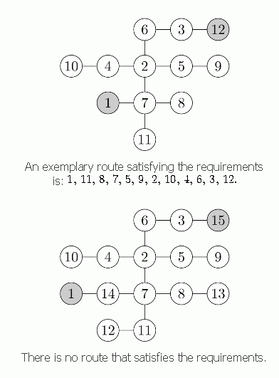

Byteasar lives in Byteburg, a city famous for its milk bars on every corner. One day Byteasar came up with an idea of a "milk multidrink": he wants to visit each milk bar for a drink exactly once. Ideally, Byteasar would like to come up with a route such that the next bar is always no further than two blocks (precisely: intersections) away from the previous one.
The intersections in Byteburg are numbered from 1 to N, and all the streets are bidirectional. Between each pair of intersections there is a unique direct route, ie, one that does not visit any intersection twice. Byteasar begins at the intersection no. 1 and finishes at the intersection no. N.
Your task is to find any route that satisfies Byteasar's requirements if such a route exists.

给一棵树，输出遍历序列a[]，要求每个节点被访问到到恰好一次 要求从1号节点出发，结束在n号节点 要求对于所有i,a[i]与a[i+1]的距离 小于等于2